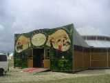
Hors cerf-volant, de nombreux centres d'attraction : le "Magic Mirror", déjà vu sur l'Entonnoir à Berck, tout en bois façon 1900.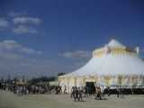
Et puis des cirques, des stands de différentes sociétés (ou sectes ?), religieuses, écologiques ou de loisirs, avec quand même une orientation commune : fournir de la boisson et de la bouffe toute la journée car il y aura du monde (30 000 ?).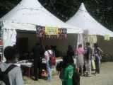
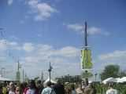
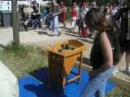
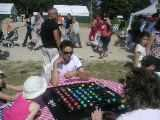
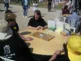
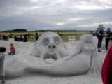
gigantesque et accueillant bac à sable, même s'il est peuplé de monstres inquiétants !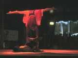
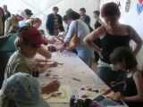
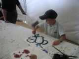
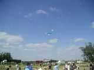
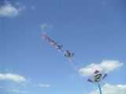
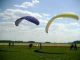
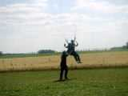
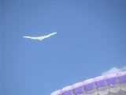
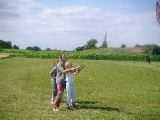
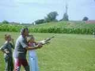
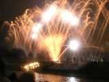